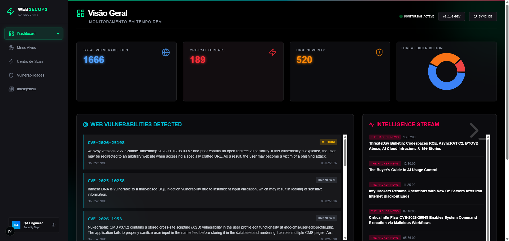
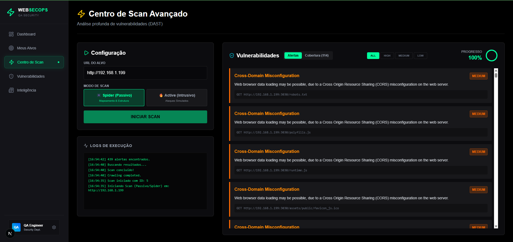

Orquestração de testes de segurança DAST e correlação automática de CVEs utilizando IA para proteger ativos digitais em larga escala.

Empresas com múltiplos domínios enfrentam dificuldades em manter uma postura de segurança contínua. O desafio era automatizar o escaneamento de vulnerabilidades e cruzar os achados com bases de CVEs conhecidas em tempo real.
Visualização em tempo real do motor de scan identificando falhas críticas e correlacionando-as diretamente com a base de dados de CVEs.

100%
Accuracy
CVE-DB
Sync Active
DAST
Engine Ready
FastAPI (Python) orquestrando ferramentas de DAST e integração com APIs de Threat Intelligence.
Next.js & Tailwind CSS para uma visualização rápida de ativos e status de segurança.
Utilização de LLMs para explicar vulnerabilidades encontradas e sugerir correções imediatas.